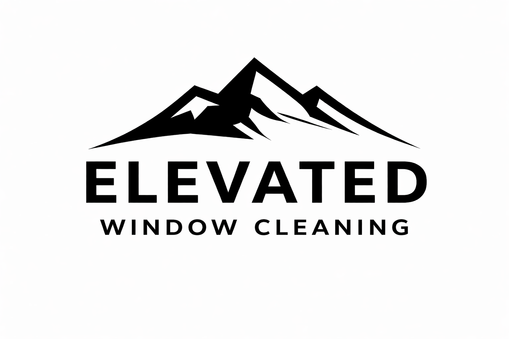
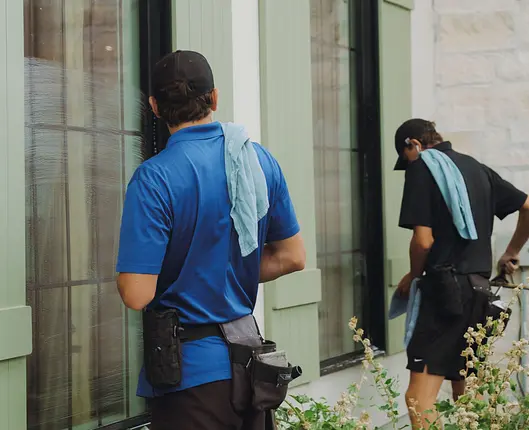

Window cleaning
A clear view, inside and out. Careful cleaning tailored to your property.
- Interior & exterior windows
- Screens, tracks & sills
- Hard-water removal
- Mirror cleaning

Utah homes & businesses
Beautifully clean windows, cared for by the brothers who own the business. Personal service, down to the last detail.
A little care. A big difference.
From the windows you look through every day to the details outside, we help your home or business feel its best.
A clear view, inside and out. Careful cleaning tailored to your property.
Give the rest of your property the same attention as your windows.
Bring your holiday vision to life without taking on the installation yourself.
Services and inclusions are confirmed in your personalized quote.

Small business. Personal pride.Two brothers. One high standard.
We’re identical twin brothers with six years of hands-on window cleaning experience. We own the business, and we’re the ones caring for your windows.
From annual residential cleans to construction cleanup and stubborn hard-water buildup, we bring careful work and a personal touch to every property.
See how we cleanSimple from the start
Send your property details and the services you’re interested in.
We review the scope and any special considerations before providing your price.
Once your quote is accepted, we send the booking link to arrange your cleaning.
If it rains within one week of your cleaning and your windows need a touch-up, we’ll return at no additional charge.
Local care, close to home
Based in Orem, we clean windows for homes and businesses throughout Utah County, Midway, Heber City, Park City, and surrounding communities.
Check your address with usPricing depends on the service, materials and scope of work. For window cleaning, pane count and areas needing special attention help determine the quote. We provide pricing before work begins.
Yes. We offer window cleaning for both homes and businesses. Tell us about your property so we can confirm the right scope of service.
We offer screen, track and sill cleaning. Let us know what you need when requesting a quote; the specific inclusions will be confirmed in your estimate.
Start by requesting a quote. The owners review your request and provide an estimate. After your quote is accepted, we send a booking link.
If rain occurs within one week of service and your windows need a touch-up, we return at no additional charge. Contact us to arrange it.
Tell us your preferred cleaning frequency when requesting a quote. We can follow up with a reminder when it’s time to arrange another cleaning; appointments aren’t automatically booked.
A clearer view starts here
Tell us about your property. We’ll take it from there.